Simulação de Ótica de Raios
Simulação de Ótica de Raios
Worked examples for the wave-optics simulator, where the light is a complex scalar field summed from point sources. Each is built to fit the window it is loaded into, so it fills whatever screen it opens on.

Two point sources
Interference between two coherent point sources.
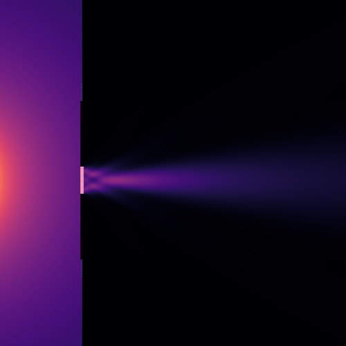
Single slit
A point source behind an opaque screen with one narrow opening.

Double slit
Young's experiment: one screen with two openings.
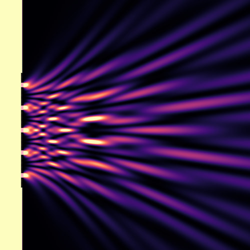
Five slits
More slits sharpen the fringes without moving them.

Diffraction grating
A plane wave on a square grating, splitting into diffraction orders.

Fresnel zone plate
Zones alternating every half wave of path bring a plane wave to a focus.

Lens
A collimated beam brought to a focus by two spherical glass surfaces.
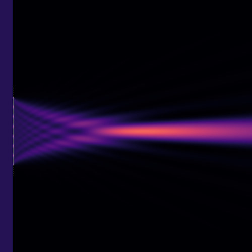
Thin lens (phase plate)
The same focus from an ideal quadratic phase, with no aberration.
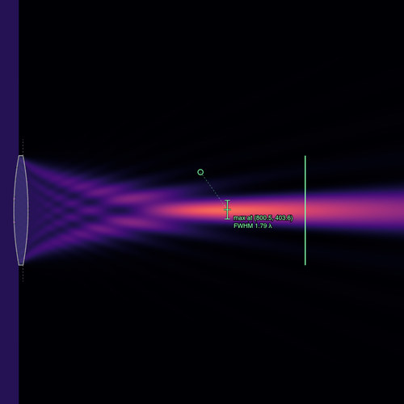
Measuring a focus
A lens with a probe on its focus and a screen across it. Select either to read it.

Far field of a double slit
The pattern at infinity, over the angles the screen subtends at the slits.
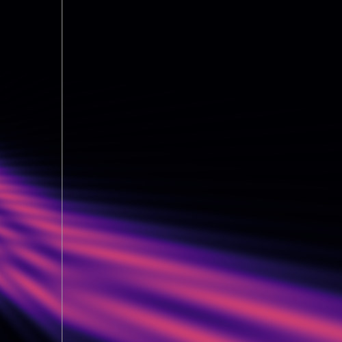
Refraction
A tilted beam crossing into a denser medium, bending towards the normal.
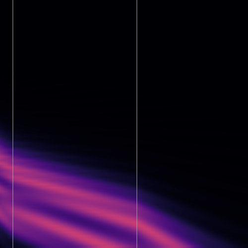
Glass slab
Two interfaces: the beam is displaced but leaves at its original angle.
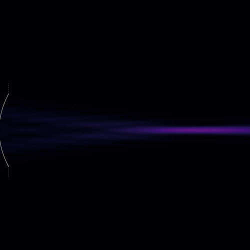
Curved surface
A collimated beam refracted by the shape of a glass surface, with no phase plate.
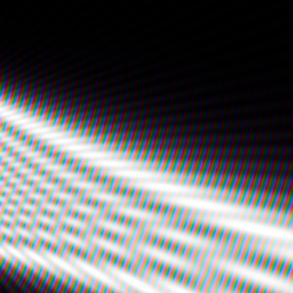
Beam steering
A phase ramp along a line source aims the radiation off-axis.
Set pieces rather than demonstrations: each states a goal, lets you change only what the exercise is about, and scores how close you are as you work. Every one is a single self-contained page, so it can be embedded in a course platform that allows no external requests.
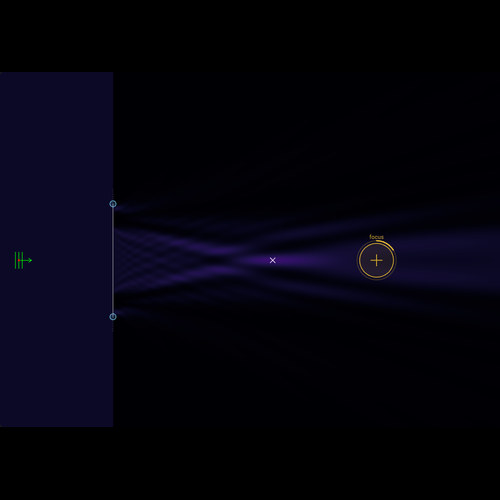
Focus the beam on the mark, and sharpen it
A Fresnel zone plate focuses by diffraction.
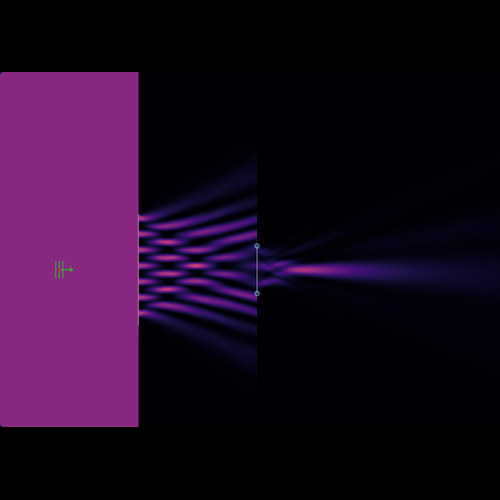
Open the pupil until the grating prints
The lens images the mask onto the plane at the right, but its pupil is too small to catch the light the mask…
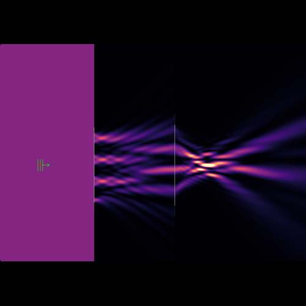
Print at half the pitch with a phase-shift mask
The lens images the mask onto the plane at the right.
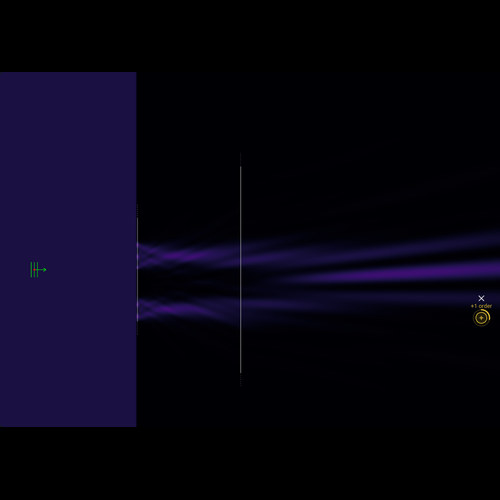
Put the first diffraction order on the mark
A plane wave lights a grating mask, and the lens brings each diffraction order to its own point in the pupil.